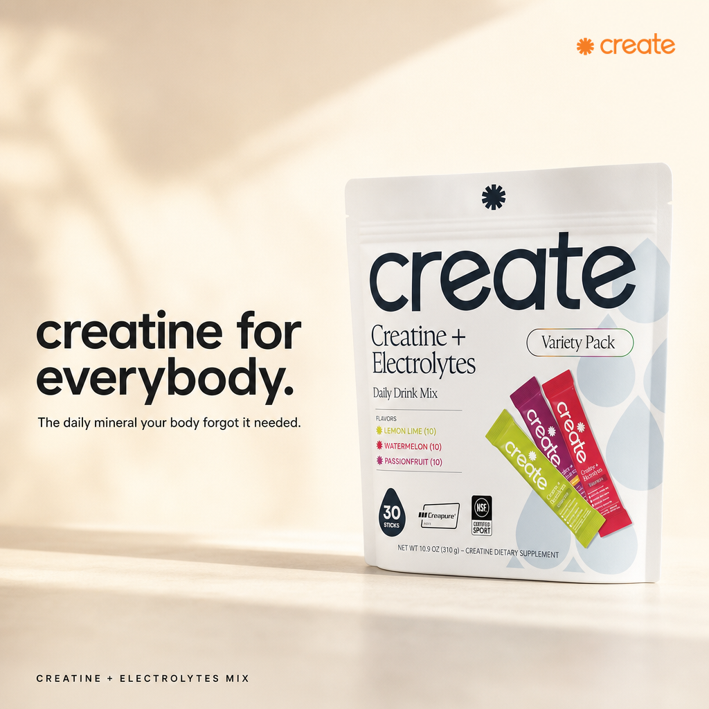
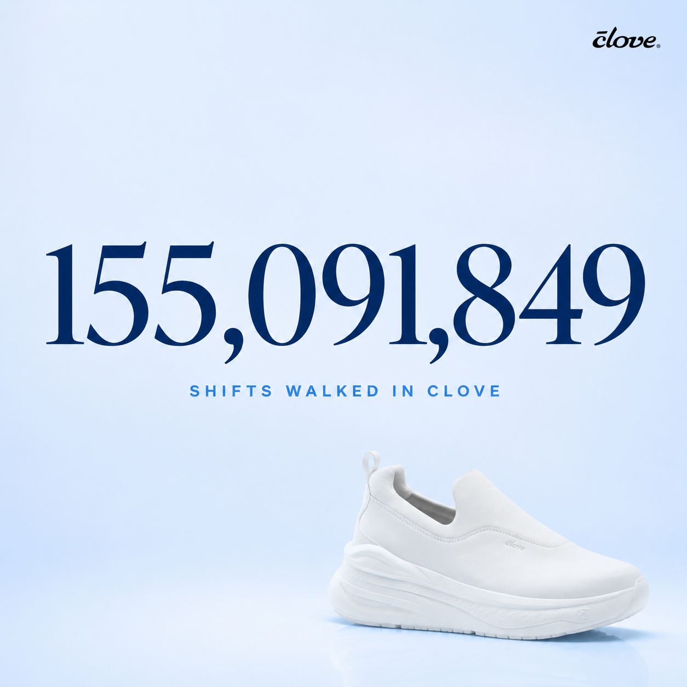
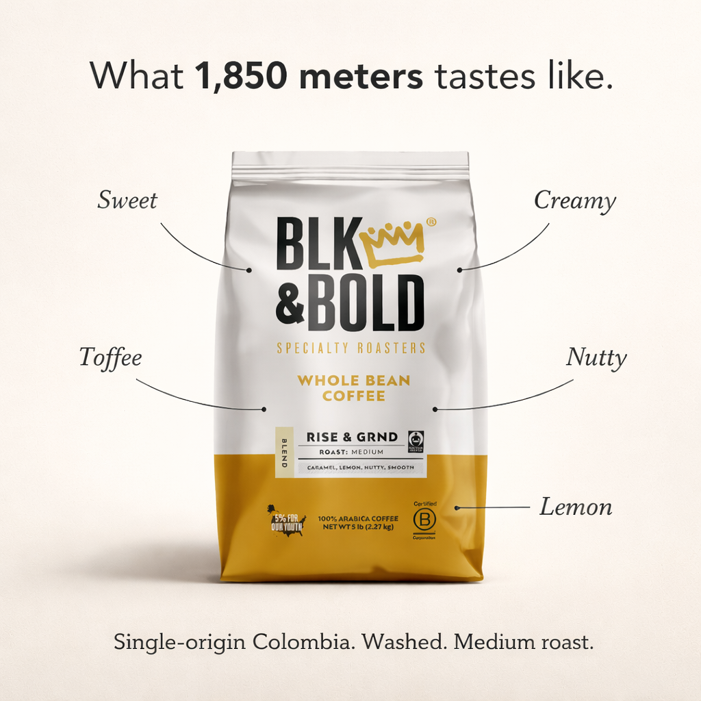
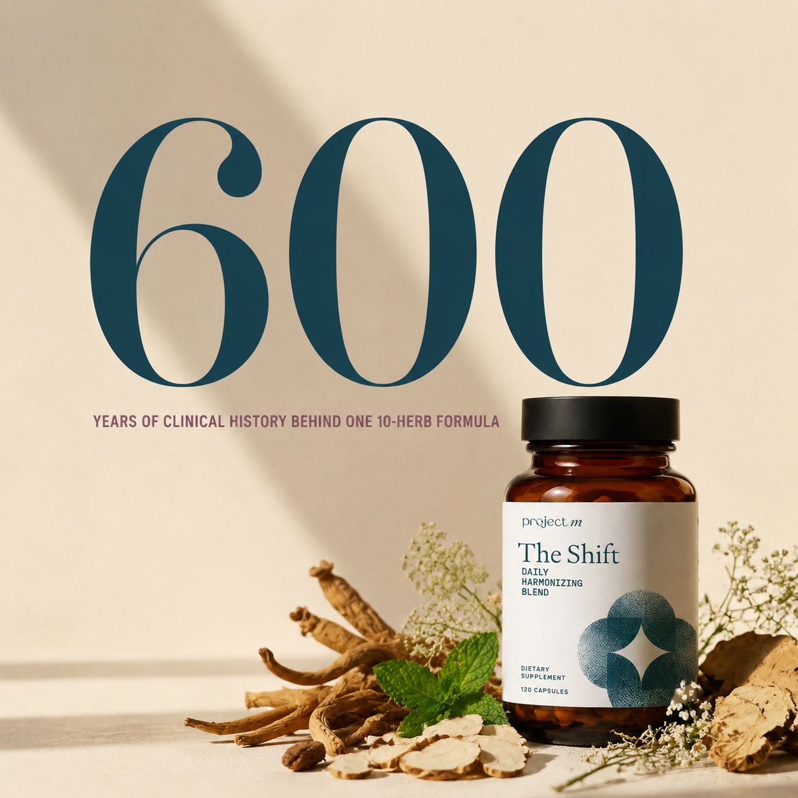
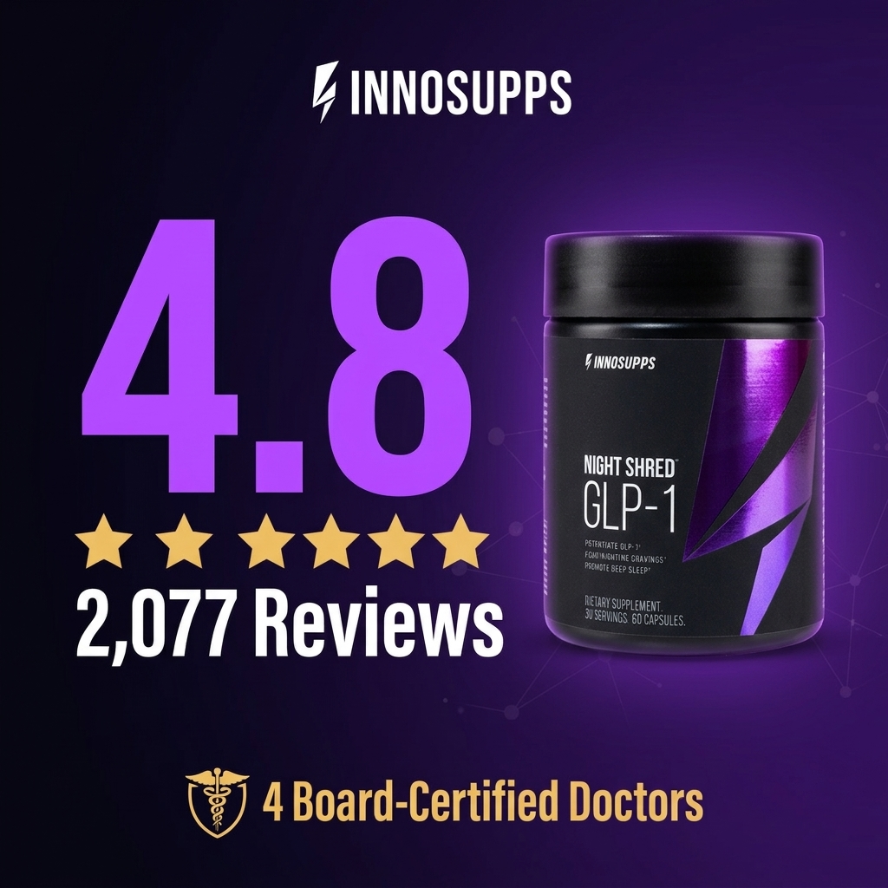
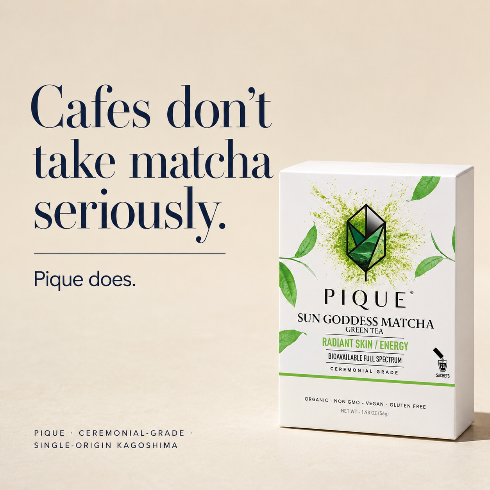
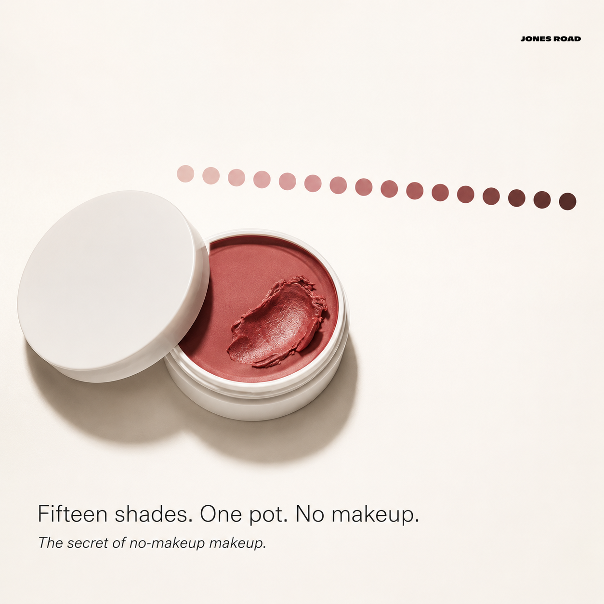
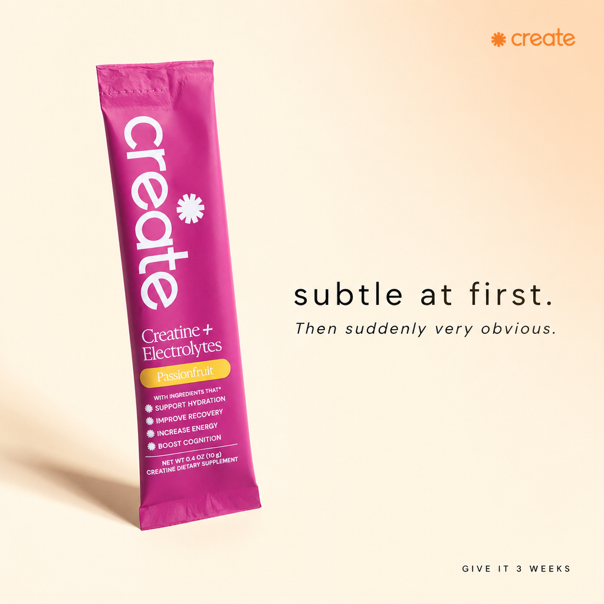
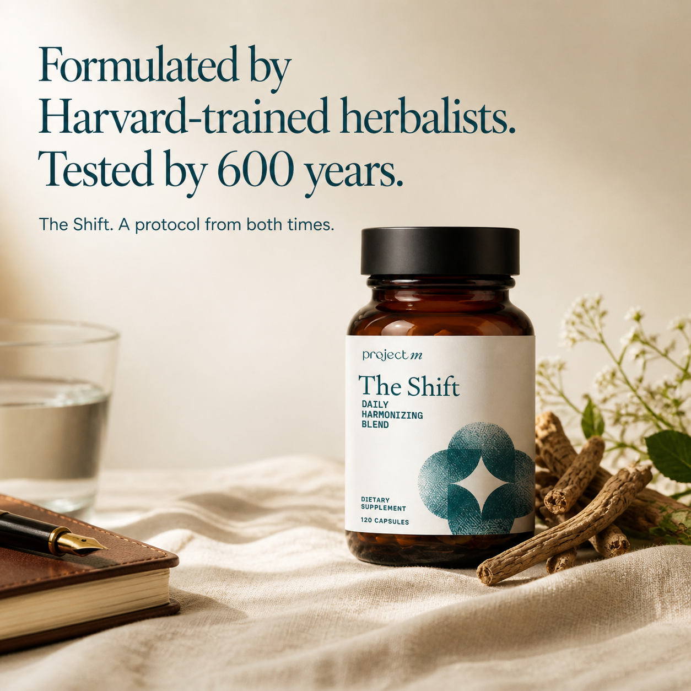

WARNING: Don't Hire An AI Marketer Who Can't Tell You Why It Worked!
Dear Friend,
If you're looking for a proven marketer who can write killer video scripts, hooks, and ads, honed across brands that made over $20M in sales…
...then read this letter carefully.
My name is Liam. I write direct-response copy for DTC brands: video ad scripts, Meta ads, long-form sales letters. Every piece is built to be tested, not admired. Multiple hooks from day one, angles run in parallel, and a plain-English reason why the winner won.
Inside this portfolio you'll find the actual scripts, the actual ad copy, and, behind every static ad, the strategic markings that explain why it converts.
Talk soon,
Liam
How every piece here is graded
The four lensesCopy doesn't work by accident. Every script and ad below carries its strategic markings against the same four lenses:
- 1. Awareness stage (Schwartz, Breakthrough Advertising). Where is the buyer when the ad finds them: Unaware → Problem Aware → Solution Aware → Product Aware → Most Aware. The lead must match the stage. A Most Aware buyer wants the deal and the deadline; an Unaware buyer needs the problem dramatized before the product can even appear. The less aware the market, the further from the product the ad must start.
- 2. Market sophistication (Schwartz's second scale). Not "how aware is she" but "how many promises has this market already heard." Stage 1-2: a direct claim still lands, or a bigger one. Stage 3: claims are worn out, so you lead with a new mechanism. Stage 4: you expand and out-prove the mechanism. Stage 5: claims are exhausted entirely, so you stop promising and identify with the prospect. Beauty is a Stage 4-5 market; a roofing emergency is effectively Stage 1: no cleverness needed, name the problem and be reachable.
- 3. Psychology (Cashvertising). Which of the Life-Force 8 desires the ad fires (survival, food, freedom from fear, companionship, comfort, superiority, protection of loved ones, social approval) and the principle carrying it: social proof, fear at the right dose, ego morphing, mental movies, bandwagon, authority transfer, scarcity, risk reversal.
- 4. Expert framework. The canon mechanic doing the work: Halbert's problem-first leads and his hierarchy (market first, offer second, copy third), Hopkins' specificity and reason-why, Bencivenga's claim-equals-proof, Ogilvy's authority register, Sugarman's slippery slide, the PAS structure.
Video Scripts
Five scripts. Five angles. One product.
UGC video ad scripts for Mrs. Quilty (quilting subscription box): one brief, five distinct angles, each written with 3-5 test hooks and full voice-over plus captions, briefed to named UGC creators. The highlighted hook is the one that ran.
First: why one hook beats another
"My stash needed an UPGRADE…"
"Why I got rid of my fabric stash…"
- AwarenessBoth hooks meet a Problem Aware quilter. She owns the frustration. At this stage the hook's only job is to name her problem and open a loop; the product waits.
- PsychologyCuriosity, one of Cashvertising's nine learned wants. A confession with the reason missing is an information gap the brain must close. The weaker hook resolves itself; the winner doesn't.
- FrameworkHalbert: enter the conversation already running in her head. Sugarman: the first line's only job is to get the second line read.
Script 1 · "Why I got rid of my fabric stash"Upgrade / problem angle+
- My stash needed an UPGRADE…
- Why I got rid of my fabric stash…✓ RAN
- Say goodbye to this old stash!
- Don't you HATE when this happens?
- AwarenessProblem Aware. She knows faded, mismatched fabrics; she doesn't know the box. So the lead names the problem, and the product enters as the mechanism that ends it.
- SophisticationCraft-supply promises are worn (Stage 3), so the ad leads with a mechanism: a curated monthly kit, not "better fabric."
- PsychologyLearned wants: dependability and quality ("never worry about faded colors") plus convenience ("everything is curated for me"). The specifics do the believing: 16 pieces, every month.
- FrameworkHalbert problem-first lead · Hopkins specificity: a number is an argument.
Script 2 · "My go-to relaxing hobby"Calming / ASMR angle · researched from TikTok ASMR copy+
- The thing no one tells you about quilting…
- My go-to relaxing hobby…✓ RAN
- The most soothing hobby
- Take a deep breath & try THIS
- AwarenessSolution Unaware. She feels the stress but doesn't know quilting treats it. Schwartz's rule: you can't create desire, only channel it. This ad channels an existing desire (calm) onto a new solution.
- PsychologyLF8 #3, freedom from stress and pain, delivered as a mental movie (PVA): "time flies… you get lost in this new world." Then bandwagon closes: 30,000 kits.
- FrameworkSchwartz desire-channeling · Whitman PVAs · the friend's-recommendation frame borrows word-of-mouth trust.
Script 3 · "Creative but not artsy? Watch this…"Identity / permission angle · numbered structure+
- Creative but not artsy? Watch this…✓ RAN
- Try this if you love crafting
- Creativity beats artistic right?
- This hobby is for DIY lovers
- Only creative people will love this…
- AwarenessProblem Aware, about herself, not the product. "Creative but can't draw" is the felt identity gap; the ad meets her there, then hands her the product as the permission slip.
- PsychologyEgo morphing: she buys the identity, not the kit. Fires LF8 #6 (achievement) and #8 (approval: "making something that's yours"). The numbered reasons are inoculation against "but I'm not artistic."
- FrameworkSchwartz identification · Hopkins reason-why in numbered form.
Script 4 · "What learning quilting looks like"Beginner journey · brand-voice / company perspective+
- What learning quilting looks like…✓ RAN
- THIS is where beginners go to quilt…
- Quilting the EASY way!
- The best newbie quilting experience??
- Learning to quilt is easier than it looks.
- AwarenessSolution → Product Aware. She's seen craft kits before, so the ad differentiates on the mechanism, total curation, instead of re-selling quilting.
- PsychologyBandwagon (11k+ beginners who started just like her) plus the learned wants of convenience and dependability. Company voice is a confidence transfer: "we make beginners fall in love" is a promise, not a review.
- FrameworkOgilvy's brand-authority register · Hopkins specifics (16 fabrics, rotary templates, monthly surprises).
Script 5 · "Need quality fabrics? Try this…"Fabric-quality angle · targets the experienced quilter+
- Need quality fabrics? Try this…✓ RAN
- Is this RUINING your quilts?
- A quilting fabric BOX?
- AwarenessProduct Aware, in the wrong category. She already buys fabric; she's never considered a subscription for it. The ad re-frames the box into a category she shops weekly.
- PsychologyFear at the right dose: "Is this RUINING your quilts?" fires LF8 #3 (loss aversion on hours of hand-work), then resolves it in the same breath. Closes on the bargain want: "best value on the market." "Cancel anytime" is the risk reversal.
- FrameworkPAS (problem, agitate, solve) · Bencivenga claim-equals-proof: 30k boxes sold backs "never looked back."
The system behind the five
One product, five separate desires: upgrade (problem), calm (emotion), identity (permission), beginner journey (invitation), fabric quality (expert buyer). Each script carries 3-5 hooks so the hook, roughly 80% of a video ad's performance, is tested in isolation. The market picks the winner, not my taste. Full VO plus caption versions were written for every script and briefed to named UGC creators.
Meta Ads
Ad copy, AI-written ads, and the strategy behind each one
Three layers: campaign copy I wrote for a DTC brand portfolio · AI-generated ad copy from my creative systems · a gallery of finished AI-generated static ads, each with a toggle that opens the strategic markings behind it.
Seasonal campaign: one winner, scaled across 3 brands
WINTER30The play: a well-performing Mrs. Quilty ad became the template for a coordinated Christmas push across three sister subscription brands. Same proven skeleton, re-voiced per audience. Role: all copy plus headline test variants.
- AwarenessMost Aware. Seasonal deal traffic knows the product. Schwartz's rule for this stage is blunt: lead with the product, the deal and the deadline. That's exactly why WINTER30 is line one, not paragraph three.
- PsychologyBargain want carried by concrete math ($75+ → $20.98) · scarcity ("limited boxes," "while stocks last") · LF8 #7 in the gifting angle (care of loved ones at Christmas) · social proof in the customer-voice opener · risk reversal ("cancel anytime") to kill the subscription objection.
- FrameworkSchwartz stage-matched lead · Hopkins specificity: $20.98 out-sells "over 70% off."
- 30% OFF Full Quilting Kit 🎁 Use code: WINTER30
- XMAS SALE 🎄 30% OFF with code: WINTER30
- "The best $23 I spent this Xmas" 🥰 Save 30%
AI-written ad copy, steered by direct response
AI-generatedWritten by my AI copy systems, directed and quality-read by me. AI writes the volume; the direct-response judgment decides what's worth testing. That combination is how you feed an ad account 10x the angles without drowning it in copy that only reads well.
"Always Wanted to Quilt? Start This Weekend."
- AwarenessProblem Aware. The problem is the guilt of the unstarted hobby, not fabric.
- PsychologyEgo morphing (she buys "quilter" as an identity) plus LF8 #6/#8. Each objection, machine, space, skill, is knocked down before the ask (inoculation).
"The Blanket That Becomes an Heirloom."
- AwarenessSolution Aware, with the stakes deliberately raised. The value reframe (blanket → heirloom) moves the purchase into a category where price logic changes.
- PsychologyLF8 #7, care of loved ones, plus symbolic permanence ("passed down, cried into at weddings"): a mental movie of her own legacy.
"Ramen So Good You'll Forget the Packet Kind Existed."
- AwarenessSolution Aware foodie. She knows good ramen exists; the ad positions against what's in her cupboard, not against other boxes.
- PsychologyLF8 #2, food and drink, the one desire you can fire with adjectives alone ("rich, deep, slurp-out-loud"), plus superiority (LF8 #6): siding against packet ramen flatters her taste.
"Restaurant Ramen. Pyjamas On."
- AwarenessProblem Aware, in the moment. The ad recreates the exact craving scenario where the purchase decision actually happens.
- PsychologyMental movie (PVA): 8pm, pyjamas, the 25-minute drive she won't make. Plus the convenience want. LF8 #2 and #5 (comfort).
Static ad gallery: open the strategy behind each ad
Finished static ads produced with my AI creative systems. Every ad is one cell of an angle test matrix. Click the toggle under each one to see the strategic markings.

View the strategic markings +

View the strategic markings +

View the strategic markings +

View the strategic markings +

View the strategic markings +

View the strategic markings +

View the strategic markings +

View the strategic markings +

View the strategic markings +
Generated by my creative systems, not hand-designed. Every product is composed around the brand's real packaging, accurate to the SKU. Each ad is one cell of an angle test matrix (headline hero, stat-led, feature callout, social proof, us-vs-them, poetic), never a one-off design.
Testing System · 2026
How I test in the Andromeda era: psychology is the targeting
My general testing methodology for any account, DTC or lead gen. Built on how Meta's Andromeda retrieval engine actually behaves in 2026, fused with the direct-response system running through the rest of this portfolio: the same four lenses, now used to build the test matrix instead of just reading it.
What Andromeda changed
Platform reality · 2026- One Entity ID per concept, not per file. Eight versions of the same ad with different fonts and backgrounds collapse into one entity that competes against itself in the auction. Recolored variations aren't testing; they're cannibalization.
- Consolidation beats fragmentation. Meta's own data: one ad set with 25 creatives beat five ad sets of five, roughly 17% more conversions at 16% lower cost. Budget stays liquid in one place so every concept gets a real read.
- Broad plus creative IS the targeting. Age plus location radius, no interest stacking. Advantage+ out-delivers manual audiences once conversion data flows: the creative signals who the ad is for, and the algorithm finds them.
- Fatigue is a signal, not a calendar. First-impression frequency dropping plus falling CTR means refresh. And nothing gets judged before day 7 unless it's catastrophic; early kills reset the learning.
- Meta's auto-AI adjustments default OFF. Background expansion, copy rewrites, auto-music: tested deliberately against controls, never left on blind.
The fusion: psychology is the diversity engine
The core ideaAndromeda demands genuinely different concepts. Direct response is the only reliable machine for producing them, because "different" isn't a new background. It's a different desire, met at a different awareness stage, in a different format. The four lenses aren't just analysis; they're how the test matrix gets built:
- WHO · awareness stage (Schwartz): where is this buyer when the ad finds them: problem screaming NOW, quietly comparing, or not yet aware?
- MARKET · sophistication (Schwartz): how many promises has this market already heard? Local-service emergencies are effectively Stage 1: no cleverness needed, name the problem and be reachable. The trust angle fights in a more sophisticated arena, where every competitor claims "licensed and reliable," so proof has to escalate.
- DESIRE · psychology (Cashvertising): which Life-Force desire carries the concept: fear and loss, family protection, trust in the tribe, bargain?
- FORMAT: direct-to-camera tech, UGC selfie, social-proof carousel, before/after demo.
Cross them and you get 20-30 true Entity IDs per client, each with its own hook set. This is the same machine that produced the five Mrs. Quilty scripts: five desires, one product. To show it travels, here's the identical matrix applied to a completely different world, a local home-services brand:
1 · Emergency
Awareness: Most Aware of the problem; it's raining into the kitchen. Psych: LF8 #3, fear and loss, zero patience. "Roof leaking after last night's storm?" Hook names the problem NOW; CTA is the phone.
2 · Trust / local
Awareness: Solution Aware; she knows she needs a roofer, she's choosing WHO. Psych: LF8 #8 plus authority transfer: reviews, licensed, "your neighbours call us back." The fear being solved is the scam, not the leak.
3 · Cost fear
Awareness: Problem Unaware → Aware. Psych: loss aversion, agitated at the right dose. "That little brown stain? A $12k repair waiting to happen." Converts a latent worry into a call today.
4 · Seasonal
Awareness: Latent / Unaware; nothing is broken yet. Psych: convenience plus light fear, pre-empting the rush. "Before the first heatwave, book the tune-up everyone forgets." Fills the pipeline between storms.
The weekly operating rhythm
Velocity with discipline- One consolidated ad set, 8-15 live creatives: roughly 4-6 proven leaders, 3-5 solid mid-tier, 2-3 fresh concepts entering every cycle.
- New concepts every 7-14 days, not daily churn (that just recreates Entity ID redundancy). Each concept ships with 3-5 hooks, because the hook is roughly 80% of a video ad's performance and gets tested in isolation.
- The read, in order: hook rate judges the hook. Under 20% it isn't stopping the scroll; 25-35%+ is the working zone. Hold rate judges the body. The money metric decides what lives: ROAS or CPA on ecommerce, cost-per-qualified-lead or cost-per-call on lead gen.
- Refresh triggers: frequency around 3.0 in 7 days on cold audiences; retargeting tolerates 6-8 over 30. Fatigue signals, not gut feel.
- Kill discipline: conversion reads are protected to day 7 unless catastrophic; leading-indicator kills can come much earlier (see the small-budget doctrine below). Winners get iterated by mechanism, the psychological reason they won, never cloned by cosmetics.
When the test budget is a few hundred dollars
Small-budget doctrineEverything above assumes enough spend to read CPL per creative. Plenty of real accounts don't have it: a local client testing on a few hundred dollars can't buy fifty conversions per ad. The system doesn't break; it re-orders.
- Two-stage testing. Stage 1 reads the cheap, fast signals: hook rate and hold rate stabilize on a few thousand impressions, roughly $20-40 per creative, so ten hooks get an honest read inside a small budget. Stage 2: only the survivors graduate to conversion spend, where the limited dollars buy CPL data on pre-validated creative instead of funding losers.
- Judge the hook early, the conversion late. Kill discipline splits in two: leading-indicator kills at 48-72 hours, conversion reads protected to day 7 and beyond. You never burn conversion budget proving a hook nobody stopped for.
- The vertical is the real test budget. One client's few hundred dollars is a cell, not the experiment. Across many clients in the same trade, every validated hook and angle becomes the seeded control for the next account: the psychology of a winning roofer hook doesn't care which roofer runs it. The compounding asset is a per-vertical angle and hook library with the WHY documented, and building that library is exactly what a creative strategist is for.
- The loop. I set the angle matrix and the hook hypotheses, production turns them into low-fi video fast, media buying runs delivery, and I close the loop with the data: name the mechanism behind the winner, log it, re-seed the next batch. Strategy and diagnosis, not just scripts.
The system bends to the money metric
Applied: lead genThe rhythm above doesn't change between accounts; the end metric does. Ecommerce optimises to ROAS. When the goal is inbound calls and booked jobs, for example local services, the same system bends like this:
- Trust formats win this category: direct-to-camera tech/founder video (30-90s, problem first, no pitch for the first stretch) and low-fi UGC, which runs roughly 25% lower CPA than studio-polished in 2026 lead-gen testing. Polish reads as an ad; low-fi reads as a neighbour.
- The specificity rule: exact client type plus named problem plus concrete outcome plus evidence anchor ("300+ roofs completed, 4.8 stars"). Specific consistently beats broad benefit claims on CPL. It's Hopkins, holding up in 2026.
- Signal is oxygen: CAPI wired so calls and qualified leads feed back into delivery; losing 30-40% of lead signals starves the algorithm. Qualifying questions on lead forms cut junk leads by more than half.
- Speed-to-lead is part of creative ROI: a 5-minute response converts roughly 9x better than 30 minutes. The ad and the call-handling are one system, and I read them together with the PPC team.
- Geo: radius targeting, broad demographics, and let the creative do the qualifying. The hook that names the storm, the suburb and the stain finds its own audience.
Benchmarks above are 2026 published platform data and industry tests; sources available on request. Per-client targets always get set against the account's own baseline, never against someone else's average.